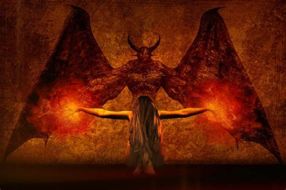

In Kanpur, tales of the terrifying Muhnochwa abound. This violent, sharp-edged entity is said to scratch your face clean off, and then leave you to die. During the early 2000s, the Muhnochwa became the most talked about phenomenon among the town folk of Kanpur. It was rumored to attack its prey in the thick of night, a foul creature that caused a slow and agonising death.
In Allahabad, the Muhnochwa was blamed for several attacks in 2002, with many victims coming forward with abrasions on the face. Several other parts of the country have also come into the grip of a paralysing fear of this creature, with many villages complaining of attacks.Descriptions of it have been varied and wide-ranging. Some have called it fuzzy with soulless eyes, others claim it looks like a giant insect. No one truly knows what it looks like, all we know is that it has struck fear into the hearts of thousands since it first made its appearance. People stayed awake whole nights for months on end, afraid to go to sleep and let the Muhnochwa in.
However, the entire phenomenon has been described by some as a fear psychosis attributed to the unknown. Many suspect that it was just some mischief mongers trying to cause panic. Physicians who were called in to investigate those attacked claimed that most known cases were self-inflicted using fingernails, forks and other instruments. Most of the victims were also apparently unaware of what they had done - a well-known psychological phenomenon, according to the Indian Rationalist Association.